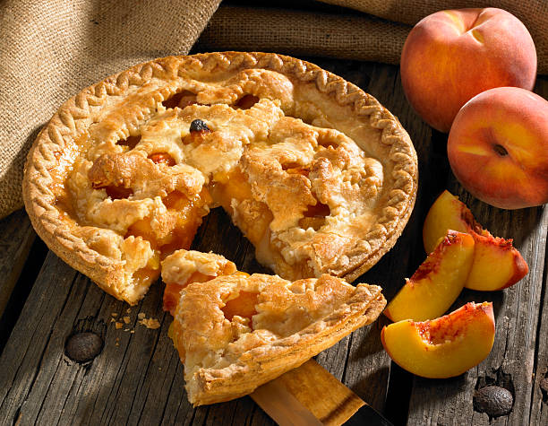

Peach pie

PREP TIME 35 min
BAKE TIME 50 min. + cooling
SERVINGS 8 servings
INGREDIENTS
- 1/2 cup sugar
- /4 cup packed brown sugar
- 4-1/2 cups sliced peeled peaches
- Dough for double-crust pie
- 3 tablespoons cornstarch
- 1/4 teaspoon ground nutmeg
- 1/4 teaspoon ground cinnamon
- 1/8 teaspoon salt
- 2 teaspoons lemon juice
- 1 tablespoon butter
- Vanilla ice cream, optional
INSTRUCTIONS
MAKE PASTRY
- In a large bowl, combine sugars
- Add peaches and toss gently.
- Cover and let stand for 1 hour.
- On a lightly floured surface, roll one half of dough to a 1/8-in.-thick circle;
- Transfer to a 9-in. pie plate or iron skillet.
- Trim even with rim.
- Refrigerate while preparing filling.
FILLING
- Preheat oven to 400°.
- Drain peaches, reserving juice.
- In a small saucepan, combine cornstarch, nutmeg, cinnamon and salt; gradually stir in reserved juice.
- Bring to a boil; cook and stir until thickened, about 2 minutes.
- Remove from the heat; stir in lemon juice and butter.
- Gently fold in peaches.
- Pour into crust.
BAKING
- Roll remaining dough to a 1/8-in.-thick circle; cut into 1-1/2-in.-wide strips.
- Arrange over filling in a lattice pattern.
- Trim and seal strips to edge of bottom crust; flute edge.
- Cover edge loosely with foil.
- Bake 40 minutes; remove foil.
- Bake until crust is golden brown and filling is bubbly, 10-20 minutes longer.
- Cool on a wire rack.
- If desired, serve with vanilla ice cream.